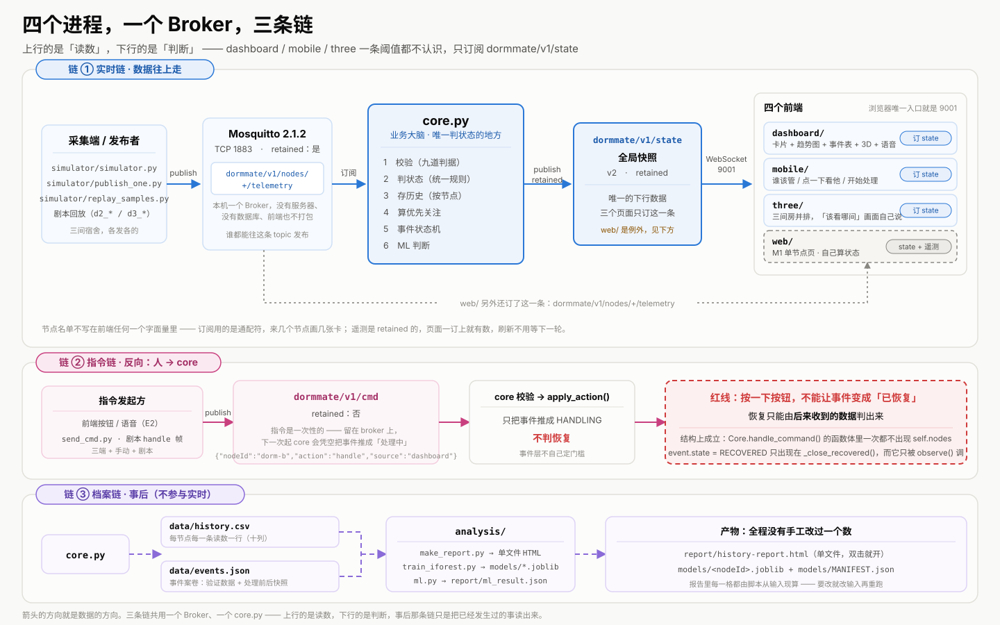
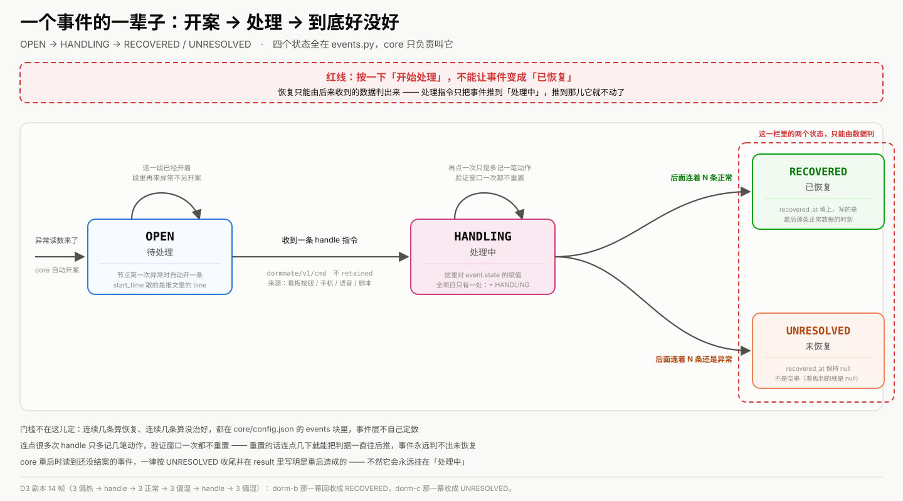

这份文件是答辩 PPT 的逐页文案，不是系统的一部分。 每一页给三样东西：页面标题 / 正文文字 / 建议插入什么图。
配图有两张是现成的矢量图，直接用：
ppt-architecture.svg→ 第 3 页ppt-event-fsm.svg→ 第 7 页🖥 想看整体效果：双击
ppt-preview.html—— 这份文案渲染出来的 翻页预览（← → 翻页，点左右两侧也行，右上角能直接打印 / 导出 PDF）。 ⚠ 那个 HTML 是产物：它由make_ppt_preview.py从这份文件生成。 要改内容改这里，别去改那个 HTML —— 改了两边就对不上了。⚠ 凡是正文里出现的数字，出处都在
README.md里查得到； 讲的时候如果有人追问「这个数怎么来的」，翻 README 对应的那一节就能对上。
core.py 做，dashboard/ mobile/ three/ 三个页面一条阈值都不认识 —— 这是整套东西的立命之本，每讲一个终端都要回到这句。 ⚠ web/ 那一版是例外（M1 阶段的单节点页，自己引 shared/rules.js 算状态）， 被问到就直说，别含糊过去。页面标题
DormMate Final 多节点宿舍环境助手 —— 一个值班的人，三间宿舍
正文
core.py 判状态、挑重点、跑事件闭环、 跑 ML 对照，一块看板实时显示；同一份数据落成档案，出报告。Mosquitto 2.1.2 · Python 3.14 · paho-mqtt · three.js 0.160 · Chart.js 4.5 · 纯静态前端（不打包、不需要构建工具）nova-dormmate-final-2026建议配图
dashboard/ 首屏截图（三张状态卡 + 顶部「当前重点」那一行）， 左边一张 three/ 三间房并排截图。两张同框，一眼看出「同一份数据的两种看法」。页面标题
三个宿舍，一个值班的人 —— 我们要替他回答的八句话
正文
| # | 问题 | 答案落在哪 |
|---|---|---|
| 1 | 这三间宿舍现在各是什么状况？ | 三张状态卡 + status 徽章 |
| 2 | 三个都异常时，先看哪一个？ | 顶部「当前重点」那一行 + 3D 里的脉冲光圈 |
| 3 | 它有多严重、已经持续多久了？ | 卡片上的时长、priority.reason 里那句人话 |
| 4 | 处理完到底好了没有？ | 事件表：待处理 → 处理中 → 已恢复 / 未恢复 |
| 5 | 页面上这个数可信吗？我看的是哪一版？ | 快照带版本号；前端一条阈值都不认识 |
| 6 | 数据断了、节点失联了，知不知道？ | 卡片上的「已离线 X 分钟」+ core 心跳提示 |
| 7 | 这一天到底发生了什么？（不是此刻） | 档案 CSV → 单文件 HTML 报告 |
| 8 | 规则说正常，模型也说正常吗？ | 看板的 Rule-ML 对照表 + 报告的案例分析 |
建议配图
1230 + 1567 条测试，暗示「这八条不是口号」。页面标题
四个进程，一个 Broker，两条链
正文
publish 到 dormmate/v1/nodes/+/telemetry （TCP 1883，retained）→ core.py 校验 → 判状态 → 存档案 → 算优先关注 → 跑事件机 → 跑 ML → 发一帧全局快照 dormmate/v1/state → 浏览器经 WebSocket 9001 拿到 → dashboard/ mobile/ three/ 只订这一条； web/ 两条都订（快照 + 遥测）—— 它是 M1 那版单节点页，保留原样。send_cmd.py / 剧本 → publish 到 dormmate/v1/cmd （不 retained）→ core 校验 → 只把事件推成「处理中」，不判恢复。core.py 追加写 data/history.csv、落盘 data/events.json → analysis/ 出单文件 HTML 报告和 Isolation Forest 模型。dashboard/ mobile/ three/ 一条阈值都不认识（logic.js 里出现 18 / 30 / 75 会被测试拦下）；而 web/ 是 M1 阶段的单节点页，自己引 shared/rules.js 调 judgeStatus() 算状态。这不是没改干净，是活化石 —— README 里明写了这两者 「故意不一样」。要证「前端不算」，看的是那三个页面。建议配图
ppt-architecture.svg。三个横向色带 （实时链 / 指令链 / 档案链），方向用颜色区分。这是全篇最重要的一张图。
页面标题
同一个系统的五种出口，不是同一张页面复制五份
正文
| 出口 | 它替人回答的问题 | 保留什么 | 砍掉什么 |
|---|---|---|---|
dashboard/ 看板 | 全部八个问题 | 三张卡 + 趋势图 + 事件表 + 被拒绝消息 + 内嵌 3D | —— |
mobile/ 手机 | 只答三件事：谁该管 / 点一下看它 / 按开始处理 | 大卡片 + 迷你列表 + 处理按钮 | 趋势图、事件表、3D、语音 |
three/ 3D | 「哪一间需要关注」让画面自己说 | 三间房并排 + 悬浮标签 + 脉冲 | 所有数字表格 |
web/ 老页面 | 单节点手动录入 / 摄像头 / 语音指令 | 录入、导 CSV、拍照、语音、自己算状态 | 多节点、跨端 |
miniapp/ 小程序 | 移动端另一种形态 | 手动录入 + 同一套规则 | （见下方说明） |
dashboard/logic.js 是纯函数库， focusBanner / speakLine / alertLine 多端共用 —— 所以同一帧快照在看板顶部、 手机大卡片、3D 读数条、念出来的那句话上永远是同一句话。分叉的时候不会报错， 那才是最难查的，所以我们从结构上消灭了它。miniapp/，../shared/rules.js 进不了包，所以规则抄了第三份。 我们用 8211 组温湿度逐个把它和网页版对齐。建议配图
dashboard/ mobile/ three/ 同一时刻的截图拼在一起 —— 同一帧快照的三种呈现。这一张图直接回答「为什么不是复制」。 把 web/ 单独摆在旁边，标一句「M1 单节点页，自己算状态」—— 这个对照本身就是「分工不是复制」的最好注脚，不要藏。logic.js 一个模块、三条箭头指向三个页面的示意图。页面标题
D1 · 三间宿舍同时在线 —— 一条规则、四种状态、来几个节点画几张卡
正文
| 顺序 | 条件 | 结果 |
|---|---|---|
| 1 | 温度 < 18℃ | 偏冷 |
| 2 | 否则 温度 ≥ 30℃ | 偏热 |
| 3 | 否则 湿度 ≥ 75% | 偏湿 |
| 4 | 其余 | 正常 |
⚠ 31℃ / 80% 是「偏热」不是「偏湿」 —— 第 2 条先命中。这条规矩最容易被人事后 改错，所以 Python 侧和 JS 侧各钉死了一遍（回归数据：25/60 正常、16/60 偏冷、 31/60 偏热、25/80 偏湿）。
dormmate/v1/nodes/+/telemetry，每个节点各存一份 互不相干的状态，来几个节点画几张卡 —— 节点名单不写在前端任何一个字面量里。web/ 不 retained，刷新要等下一轮 —— 这是故意不同的， 得知道自己在哪个页面上。）建议配图
dashboard/ 三张状态卡的截图 —— 徽章要有颜色 + 图标 （颜色不是唯一编码，色盲也分得清）。simulator 终端滚动的 JSON（能看到 status 字段）；右下：core 终端那三行 [数据]。两处并排，证明页面上的字是从这条链上来的。页面标题
D2 · 三个都异常，先管哪个？ —— 规则四步，每一步都给得出理由
正文
| 步 | 比什么 | 它赢的时候理由要说什么 |
|---|---|---|
| 1 | 连续异常的持续时长 | 「持续时间最长」 |
| 2 | 并列时比这一段的消息条数 | 「持续时间一样长、异常次数最多」 |
| 3 | 还并列时比严重度权重 | 「持续时间和次数都一样，但偏湿比偏冷更要紧」 |
| 4 | 最后按 nodeId 字典序 | 保证结果稳定可复现，不留随机 |
| 剧本 | 换人轨迹 | 逼出的是哪一步 |
|---|---|---|
d2_case1 | → dorm-b → dorm-c → 空 | 时长决出，靠恢复交接 |
d2_case2 | dorm-a → dorm-b → dorm-a → dorm-b → dorm-a → 空 | 时长并列比条数，再被更长的接管 |
d2_case3 | dorm-a → dorm-b → dorm-a → 空 | 时长、条数全平，严重度决出 |
[重点] 那行 —— 同一个宿舍一直领先不重复打（时长在涨不是新闻）。建议配图
core 终端 [重点] 的原文（能看到括号里那句理由），用小字号，重在「理由是对的」。页面标题
D3 · 按了「开始处理」，到底好了没有？ —— 那条不许越的红线
正文
OPEN（待处理）→ 收到 handle 指令 → HANDLING（处理中） → 后来连着 3 条正常就 RECOVERED（已恢复），连着 3 条异常就 UNRESOLVED（未恢复）。Core.handle_command() 拿不到节点状态，它想改也改不了；event.state = RECOVERED 这个赋值只出现在一个函数里（_close_recovered()）， 而那个函数只被 observe() 调；ast 把函数体抠出来，盯着这件事。recovered_at 保持 null（不是空串 —— 空串会让「没恢复」和「没记录」长得一样）。建议配图
ppt-event-fsm.svg，红线那一步标红。data/events.json 里一条事件的片段（能看到 state / recovered_at / 验证计数）。ast 那组静态检查的一小段 —— 「红线是结构上成立的」这句话要靠它落地。
页面标题
E1 · 让画面自己说出「该看哪一间」
正文
| 画面里 | 跟着谁 | 数据从哪来 |
|---|---|---|
| 地板颜色 / 窗户 | 环境状态（正常/偏冷/偏热/偏湿） | 快照 nodes[].status |
| 风扇转不转 | 环境状态（偏热）或事件状态（处理中） | 前者 status，后者 events[].state |
| 脉冲光圈 | 谁是当前重点 | 快照 priority |
| 相机飞过去 | 焦点是谁 | 快照 focus |
pointer-events: none 会吃掉所有鼠标事件 → 表现是「点房间没反应」， 控制台无任何报错；lookAt → 只改位置不改朝向，画面挪了一下但没转过去，同样不报错。建议配图
three/ 页面截图 —— 三间房并排 + 房间头顶的悬浮标签 + 某一间在脉冲。 这一张要占半页。or 改成 and 被 5 条抓住」这类最直观的）。页面标题
E2 · 手上拿着东西的时候 —— 一句话走完一条链：说 → 认 → 做 → 回帧确认
正文
| 说什么 | 干什么 | 关键设计 |
|---|---|---|
| 「查看 dorm-b」 | 发一条 focus 指令 | 本地不动镜头 —— 等 core 发回的新快照说了算 |
| 「记录现场」 | 摄像头拍照 + 打水印 | 水印第一行是这条证据的身份：宿舍 · 事件编号 · 时刻 |
| 「朗读状态」 | TTS 念出当前状况 | 念哪句由 logic.js 的 speakLine 现算，页面一个字都不拼 |
| 「开始处理」 | 发一条 handle 指令 | 和按钮走同一条指令链，同样不判恢复 |
麦克风 → 浏览器 ASR（Chrome 走云端识别，要联网）→ 词表路由 → 四件事之一 → publish 指令 → core 处理 → 发回快照 → 页面据新快照改口cameraCount 变大了」。指令没发出去、或者 core 拒收 （那间此刻没有未结案的事件），屏幕上不许写「已登记」。这是全项目最不该出现的一类假话。localhost ✓，file:// ✗，手机扫码走局域网 IP 的 http 也不安全 ✗。演示要老实用本机。建议配图
web/ 页面截图（麦克风按钮 + 四个结果区：听到了什么 / 要做什么 / 焦点 / 指令结果）。core 终端 [指令] dorm-b snapshot（web）-> 接受：… 那一行。页面标题
E3 · 在手机上点一下，大屏跟着切过去
正文
dorm-b，三个屏幕同时跟过去。focus 指令走完全程： 手机点一下 dorm-b
└ publish dormmate/v1/cmd {"nodeId":"dorm-b","action":"focus","source":"mobile"}
（不 retained：指令是一次性的，留在 broker 上等于下次起 core 时凭空切一次焦点）
▼
core 校验 → 记进焦点 → 终端：[指令] dorm-b focus（mobile）-> 接受：焦点切到 dorm-b
▼
publish dormmate/v1/state（retained） focus: {nodeId, by:"mobile", at}
├─▶ mobile 大卡片换成 dorm-b、列表那一行点亮
├─▶ dashboard 顶栏标签变「跨端焦点」、趋势图切过去
└─▶ three 场景切到 dorm-btapNode 只做两件事 —— 把指令发出去、把说明写出来。焦点归谁要等 core 发回来的新快照。 本地先把那一行点亮就是「伪造同步」，而题目里点名禁止的正是这件事。 所以移动端连一个输入框都没有，有测试盯着。建议配图
core 终端 [指令] … focus 那行 + 快照里 focus 三格 （nodeId / by / at）的 JSON 片段。页面标题
D4 · 演示到一半，Broker 挂了 —— 三类故障的现场记录
正文
| 故障 | 怎么制造 | 最直接的定位手段 |
|---|---|---|
| ① 停掉 Broker | 终端 1 里 Ctrl+C | 三个页面右上角翻成「未连接 / 重连中…」；core 打一行断开；netstat 上 1883/9001 没了 |
| ② Topic 写错 / 对不上 | …/telemetery（少一个 y）、…/v2/…、或 topic 与报文里的 nodeId 不一致 | 前两种：core 什么也没有，MQTTX 订 v1/# 能看见那条孤儿消息。第三种：core 打 [拒绝] 并写明两边不一致 |
| ③ 非法报文 | 一条脚本发全九类（非法 JSON / 缺字段 / 未知节点 / 数值离谱 / …） | inject_faults 自己那张表：逐条写着「core 拦住了没有、理由对不对」——core 没在跑时那张表全红，它不会假装绿 |
为什么？四个进程里只有 core.py 不会自己重连。 前端走 mqtt.js（自带 2 秒重连）， 模拟器走 loop_start()（内部是带自动重连的 loop_forever()），而 core 的主循环是 轮询式的 while True: client.loop(timeout=0.5)，paho 的自动重连 只在 loop_forever() 里。 → 「页面已连接 + 数字不动」这个组合，答案就是 core 没回来。 去 core 那个终端重启一遍。 D4 的要求本来就是「不需要写自动修复」，手动修复是修复动作的一部分，不是漏做。
staleAfterSec） 就说「core 没声了」。建议配图
netstat 故障前/后的对比（有 ESTABLISHED vs 只有 LISTENING）。inject_faults 终端那张九条表（拦住了 / 理由对不对）。页面标题
D5 · 规则说正常，模型也说正常吗？ —— 两个方向的不一致，都要点出来
正文
analysis/ml.py → 出一份报告，进 report/；ml_label 和第 10 列 agree，同时进快照给看板。data/constructed_samples.json 里几条样本 source 无条件写 constructed，训练时一律跳过。 ⚠ 不跳的话，那些极端值会被当常态训进去，之后模型判它们「正常」—— 案例静默地复现不出来。跳过判据全项目只有一处。| 位置 | 值 |
|---|---|
predict() 的返回值 | 1 / -1 |
档案第 6 列 + 快照 mlLabel | normal / abnormal |
| 报告里给人看的 | 「接近历史常态 / 与历史明显不同」 |
档案第 10 列 agree | yes / no |
⚠ agree 不能写 Python 布尔 —— 落盘那层的 _cell() 把 bool 当缺值打成空串， 写进去整格会消失，于是「没判」和「判了不一致」在档案里长得一模一样。 留空 = 没判，不是判成正常。
predict 是拿 decision_function < 0 切的，和 offset_（-0.5）无关；如果改用 score_samples < 0，在同一份真数据上会 差 1/6 行。两套口径并存，两条 ML 链就会在同一行上给出不同结论 —— 所以两条链统一只用 predict()，并有一条测试钉死这件事。建议配图
train_iforest 终端逐节点汇总（能看到 constructedSkipped 那一列不是 0）。models/MANIFEST.json 的片段。页面标题
我们自己拍板的地方，和往哪走
正文
A. 自主设计决策（每一条都有「为什么」，不是随手选的）
| 决定 | 为什么 |
|---|---|
| 没有服务器、没有数据库 | 一个 Broker + 四个进程就够，前端纯静态不打包 —— 复现门槛压到最低（解压完照着五步走） |
core.py 是唯一业务大脑 | 前端一条阈值都不认识（logic.js 里不许出现 18 / 30 / 75，有测试盯着）。前端再算一遍就是同一件事写两份，两边迟早说两套话 |
| 三份「只有一处」 | 规则实现、topic 字符串、快照形状 —— 第二份一出现就是 bug，每个都有测试 |
| 判定顺序不可调换 | 31/80 是偏热不是偏湿，Python 与 JS 两侧各钉死一遍 |
staleAfterSec 由 core 算好放进快照 | 三个前端不能各算各的 —— 它们算出不同答案时会静默地给出互相矛盾的提示 |
| retained 的取舍 | 遥测和快照 retained（刷新即见）；cmd 不 retained（否则下次起 core 凭空把事件推进「处理中」）；reject 不 retained（坏消息不许留在 broker 上） |
| 部分更新，不整份替换 | 前端只遍历快照里提到的节点 —— 「缺数据」和「正常」是两件事，显示层没资格替谁做主 |
B. 亮点
ast 抠源码的静态检查盯着。C. Open Enhancement 拓展（这些不是没想到，是刻意留的）
client.loop() 返回非 0 时调一次 client.reconnect()。D4 明确不要求，on_connect 那边的重新订阅逻辑早就写好了。history.csv 轮转 / 归档 —— 现在只追加、无上限，一天约 5 万行。 档案一条都不许丢，所以得做归档而不是截断。latest 一律被最后收到的顶掉，比的是到达顺序而不是报文时间。 真正的防线目前是剧本里同节点时间必须递增。建议配图
ast 静态检查的一小段代码截图 —— 「红线是结构上成立的」这句要靠它落地。页面标题
我们知道它哪里不行
正文
| 类别 | 挑三条最该讲的 |
|---|---|
| 设计如此 | ① 前端不算 status（刻意的，见第 3 页）；② web/ 与 dashboard/ 对 status 的态度是两个世界（一个信发布端发来的、一个连阈值都不认识）；③ 快照是部分更新，「缺数据」不写成「正常」 |
| 还没做 | ① core.py 断线不会自己重连（第 11 页那段，手动修复是 D4 的一部分）；② history.csv 只追加、无轮转；③ 无乱序保护；④ 照片不上传，只有元数据 |
| 环境依赖 | ① 必须 64 位 py -3.14（32 位会装上一堆跑不起来的包）；② Mosquitto 2.x 装完会自己占住 1883；③ 麦克风 / 摄像头 / 语音识别只在安全上下文里可用 —— 手机扫码走局域网 IP 打不开（这条最容易在答辩现场被误判成 bug） |
建议配图
# 1. 起演示环境（拍照截图用）
start_broker.bat
py -3.14 core.py # 终端 2
py -3.14 -m simulator.simulator --all-nodes --interval 4 # 终端 3
py -3.14 -m http.server 8000 --bind 0.0.0.0 --directory .
explorer.exe http://localhost:8000/dashboard/
explorer.exe http://localhost:8000/three/
# 2. 第 6 页那三套剧本（各截一张顶部「当前重点」）
py -3.14 -m simulator.simulator --script simulator/scenarios/d2_case1.json
py -3.14 -m simulator.simulator --script simulator/scenarios/d2_case2.json
py -3.14 -m simulator.simulator --script simulator/scenarios/d2_case3.json
# 3. 第 7 页 D3 闭环（截三张连拍）
py -3.14 -m simulator.simulator --script simulator/scenarios/d3_event.json
# 4. 第 11 页故障现场
py -3.14 -m simulator.inject_faults # 九条表
# 然后 Ctrl+C 停掉 broker、再起回来 —— 截那张「已连接 + 数字不动」
# 5. 第 12 页 D5
py -3.14 -m simulator.simulator --all-nodes --count 60 --mode random
py -3.14 analysis/train_iforest.py --csv data/history.csv --out-dir models
# 训完重启 core，再：
py -3.14 -m simulator.replay_samples --file data/constructed_samples.json
py -3.14 analysis/make_report.py --csv data/history.csv| 文案里的数 | 出处 |
|---|---|
| 1230 / 1567 / 2797 | README.md「跑测试」那一节 + 十一份 tests/*.test.js 的实测输出 |
四条规则与判定顺序、25/60 · 16/60 · 31/60 · 25/80 | README.md 5.3「统一约定」 |
| 30 秒离线超时 / 5 秒心跳 / 15 秒判 stale | core/config.json + README.md 第 1 节第 6 条 |
| 连续 3 条正常算恢复、3 条异常算没治好 | core/config.json 的 recoverConsecutiveNormal / verifyConsecutiveAbnormal |
| 三套剧本的换人轨迹 | simulator/scenarios/d2_case*.json + tests/test_scenarios.py |
| 17 个变异 0 存活 / 191 条 | README.md 的 ## Step E1 |
| 8211 组温湿度对拍 | tests/miniapp-rules.test.js |
差 1/6 行（predict vs score_samples） | analysis/ml.py 的注释 + tests/test_ml.py |
| 「只有 core 不会自己重连」 | README.md 的 ## Phase9 D4（实测方法也记在那里） |
docs/ppt-copy.md 生成 —— 改文案请改那份，别改这里